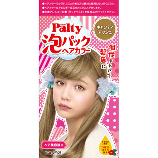
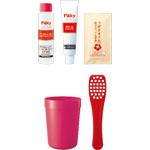

返回列表
产品名称：パルティ 泡パックヘアカラー キャンディアッシュ

ダリヤ パルティ 泡パックヘアカラー キャンディアッシュ ７５ｍｌ＋７５ｍｌ（医薬部外品）
メーカー ダリヤ
JANコード 4904651182008
商品の特徴
個性きわだつ髪色に
うるおい成分 つばきオイル配合
- 成分・分量
- ○１剤
【有効成分】
α－ナフトール、塩酸２，４－ジアミノフェノキシエタノール、オルトアミノフェノール、パラフェニレンジアミン
【その他の成分】
亜硫酸ナトリウム、アンモニア水、エデト酸四ナトリウム四水塩、塩化ジメチルジアリルアンモニウム・アクリルアミド共重合体液、オレンジ果汁、海藻エキス（４）、加水分解シルク液、カルボキシビニルポリマー、精製水、セタノール、炭酸カリウム、炭酸水素アンモニウム、大豆たん白加水分解物、ツバキ油、濃グリセリン、パラオキシ安息香酸プロピル、パラオキシ安息香酸メチル、ポリオキシエチレンステアリルエーテル、ポリオキシエチレンラウリルエーテル硫酸ナトリウム、モモ果汁、リンゴ果汁、レモン果汁、Ｌ－アスコルビン酸、１，３－ブチレングリコール、香料
○２剤
【有効成分】
過酸化水素
【その他の成分】
ジエチレングリコールモノエチルエーテル、精製水、セタノール、セチル硫酸ナトリウム、ヒドロキシエタンジホスホン酸液、フェノキシエタノール、プロピレングリコール、ポリオキシエチレンセチルエーテル、リン酸
○つばきオイル配合のヘア美容液
【成分】
水、ＢＧ、ジメチコン、ジリノール酸ジイソプロピル、ミネラルオイル、ステアリルアルコール、ステアリン酸ソルビタン、ステアリン酸ＰＥＧ－２５、カルボマー、キサンタンガム、グリセリン、水酸化Ｋ、ツバキ油、ブチルパラベン、メチルパラベン、ユチャ油、ＥＤＴＡ－２Ｎａ、ＰＥＧ－４０水添ヒマシ油、香料
- 用法及び用量
- 【使用方法】
１．混合カップにベースウォーターを先に入れ、次にクリームを入れます。
２．円を描くように２０～４０回程度混ぜます。内側のラインまで泡がふくらんできたら完成！
３．髪全体にもみ込むようにたっぷりぬります。
●本品はシャンプーのように泡立ちません。
４．約２０分程度放置した後、よく洗い流し、シャンプー・コンディショナー等で仕上げます。
必要に応じて、付属のヘア美容液を使用してください。
５．泡（混合薬剤）・すすぎ湯が目に入らないように特に注意してください。
強くすりこまないでください。